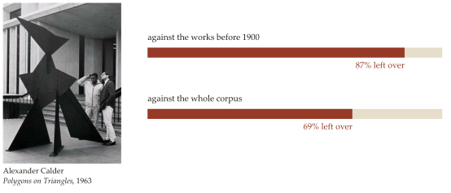
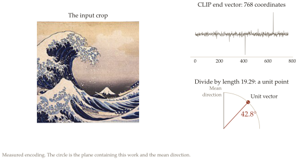
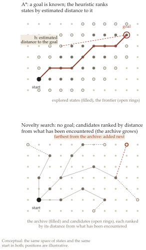
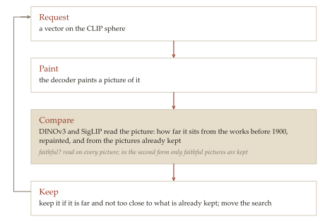
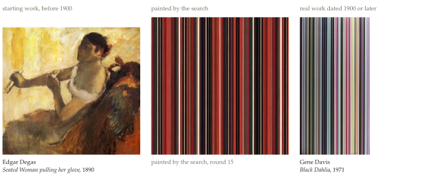

Introduction
The problem we are defining below lies at the heart of novel discovery, or discovery for that matter, because the definition of novelty can be subjective and vary from field to field. It is often argued that “novel” is not a property of an artifact in isolation. It is a relational claim: new relative to an observer, a context, and what has already been seen (Itti and Baldi 2009).1 This paper takes a pragmatic stance and operationalizes novel discovery as a search problem in representational space, using foundation models2 as learned representation spaces whose distances track some human judgments of similarity.3
We started with the question of finding undiscovered artifacts, given the archive of all artifacts produced and known to humans. We do not have examples of what we seek, but we can make some by stopping the archive at an earlier date. Say it stops at 1900, a round year inside the stretch where the corpus changes fastest (Q2). Alexander Calder’s Polygons on Triangles (1963) is then an undiscovered artifact. Its leftover (the share the earlier works leave undescribed) is larger against the works before 1900 than against the whole corpus (Figure 1). So we freeze the corpus at 1900 and ask: Can the works a culture has already made tell us where it has not been, when all we measure is how far a candidate sits from them? We call this distance far, a second measure beside the leftover.4
So a search is a way to look where the works have not been, and the works after 1900 let us check what it finds on a future we already know.

To measure how far a candidate sits from the works, we need a space where distance means something a viewer would agree with. We take that space from a foundation model’s image encoder (CLIP, DINOv3 or SigLIP here), which turns each work into a point on a sphere, and how different 2 works are is the angle between them (Figure 2; Encoders and corpus).

The works do not fill this sphere, they sit inside one cone of it, and that holds in all 3 encoders we use, CLIP, DINOv3 and SigLIP. By the manifold we mean the art we have, as an encoder reads it (the lumpy region the works fill inside the cone, Figure 3). Q1 maps it, and Q7 says when a picture is on or off it.

With such a space, what does it mean to search it? This is not new, people working on classical search algorithms in Artificial Intelligence used hand-crafted heuristics to guide the search toward a specified goal, as in A* and related goal-directed methods (Hart et al. 1968; Newell et al. 1959) (Figure 4). We take the same basic idea, that one can represent a domain in an appropriate state space and guide exploration within that space by a heuristic. Our state space is the embedding space of a foundation model, and our search has a heuristic but no target that can be specified in advance. The heuristic is a picture’s score (we paint every candidate as a picture, as below), its mean distance to its 15 nearest works from before 1900. A picture is far when its score is over the bar, the score that 99% of a reference set of those works lie below, in both of the 2 encoders that read the pictures. We call a place unexplored when a picture there is far (Q7). Search by distance from what has already been found was later proposed as novelty search (Lehman and Stanley 2011). Our motivation is natural evolution, which has no goal and still produced new forms.5 We search with CMA-ES, an evolution strategy that each round tries variations, and the next round starts from the farthest of them (Q10).

Our framing also poses a practical question: how should the search be steered so that novelty does not collapse into noise? Steering matters because unconstrained novelty maximization can drift toward degenerate solutions, much like the “noisy TV” failure mode in curiosity-driven exploration (Burda et al. 2019), where statistically surprising states are not necessarily meaningful (Pathak et al. 2017). We try to resolve this by searching over the CLIP embeddings of images and using a pretrained image generator as the decoder, which paints every point we visit, so every point is judged as a picture (Q8). So for every picture we also check that it is faithful, i.e., that it comes back near the vector we asked for. Faithful says nothing of whether a picture is good, coherent or new (Q7).
So the goal of this paper is its title: to discover unexplored regions, on and off the manifold, with a novelty search in a foundation model’s embedding space (Figure 5). We ground our exploration in the WikiArt dataset.6 Artworks provide a well-defined domain where novelty is meaningful, as art history is precisely concerned with what is new relative to what came before. So a search is given only works from before 1900, and the works made after are held back to check what it brings back, and the search never aims at them (a second set of runs, scored against the art of every date, is in Q11). The freeze holds for the corpus only.7 The later works did help us choose the score, the bar and the 2 observers (Q6, Q7).

So can the works tell us where a culture has not been? Yes, in the sense we test it. We test one sense: a place is unexplored when a picture there is far from the works before 1900 (Methods overview). Measured only against those works, later works are over the bar more often: in CLIP about 26% of the works from 1960 on are, against 1% of the works before 1900 by the bar’s own setting (Q6). Far alone is not enough, as noise is far too and a search that follows distance alone brings back nothing far and faithful (Q7, Q12). Held to faithful pictures, DuROOM search paints far and faithful pictures 2.9 and 1.6 times as often as the same loop told random scores, with its step and without it (Q12). With no search, 0.5% of the pictures painted from the 6 kinds of request in Q9 are far and faithful. Requests read from noise images, also with no search, reach 20% (Q7). 92% of DuROOM search’s far and faithful pictures are on the manifold (8% off), and 88% sit where art went only after 1900, i.e., a real work dated 1900 or later is within the manifold line of them (the distance within which a repainted real work nearly always has its nearest real work, Q7) and none dated before (Figure 6 shows one).8 Pictures from different starts often arrive at the same later works, and each start also keeps works of its own (Q11). We could not show a place off the manifold where pictures from 3 or more starts meet.

In the following pages, we review related work (Related work). We then look at the data and its geometry (Encoders and corpus, Q1 to Q6), present our methodology in detail (the Methods overview, Q7 to Q10), followed by experiments and results (the Results overview, Q11 and Q12). We conclude with discussion of limitations and future directions (Discussion).
References
Footnotes
Bayesian surprise formalizes this observer-dependence: it measures the shift in beliefs when data is observed, \(S(D,M) = D_{KL}[P(M|D) \| P(M)]\), the Kullback-Leibler (KL) divergence from prior to posterior over a model space.↩︎
Foundation models are models “trained on broad data (generally using self-supervision at scale) that can be adapted (e.g., fine-tuned) to a wide range of downstream tasks” (Bommasani et al. 2021). The search moves among CLIP image embeddings (Radford et al. 2021); 2 other encoders, DINOv3 (Siméoni et al. 2026) and SigLIP (Zhai et al. 2023), read the pictures it makes, and a fourth, AIMv2 (Fini et al. 2025), is kept out of the loop.↩︎
Distances between deep features agree with people on how alike two small photographic patches look under low-level distortions, for supervised, self-supervised and unsupervised networks alike, and in that paper’s tests they do so better than the metrics that came before them (Zhang et al. 2018). Distances inside networks trained to classify objects reproduce some well-known effects of human vision and miss others, 3D shape and occlusion among them (Jacob et al. 2021). A network trained mostly on photographs predicts which paintings people remember, though it is a regression on memory scores and not a distance (Needell and Bainbridge 2022; Davis and Bainbridge 2023). Directions in word embeddings carry cultural meanings that track what people report in surveys (Kozlowski et al. 2019). None of these tested CLIP, DINOv3 or SigLIP on paintings, so for art we assume the agreement and have not shown it; what image encoders have shown about how art moved in time is in Related work.↩︎
The two rank repainted works alike when both are read in DINOv3 and SigLIP (rank correlation 0.78, appendix); the leftover of Figure 1 is read in CLIP, with 32 directions.↩︎
Evolution has been described as a passive kind of novelty search subject to minimal criteria (Lehman and Stanley 2010, 2011); Related work says what a minimal criterion is.↩︎
WikiArt contains over 173,000 artworks spanning a wide range of styles and periods, of which we keep 172,171 (Encoders and corpus), and it has been used to evaluate style and content representations built on CLIP (Wu et al. 2023; Ma et al. 2025). Other corpora are left for future work.↩︎
The encoders and the decoder are pretrained models, with no limit stated on the dates of their training images (the decoder is fine-tuned from Stable Diffusion v1, whose model card names LAION-2B).↩︎
This reads dated works only. Most of these pictures also have an undated work within the manifold line (Q11).↩︎